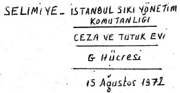
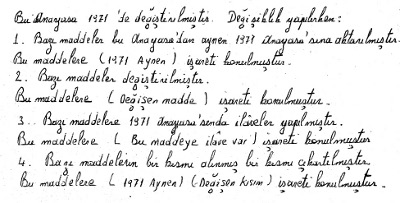
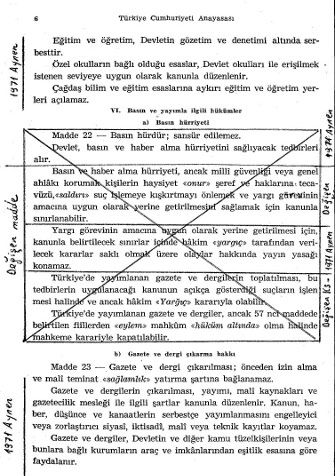
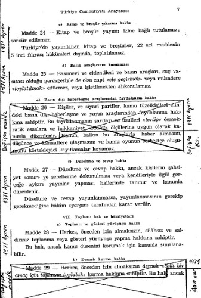
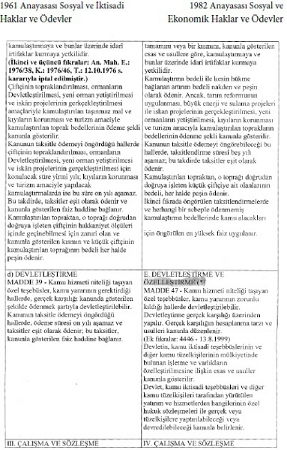
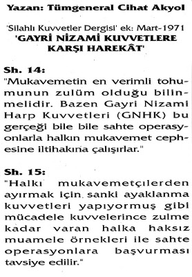

Kaynakça ve Açıklamalar
(1) a- Bomba Davası/Savunma, Talat Turhan, İleri Yayınları, 2006, s. 425-430.
b- “Kutudaki Akrep”, Av. Alp Kuran (12 Mart Olayı-26 Şubat 1975).
(2) a- ST 31-15 Gayri Nizami Kuvvetlere Karşı Harekât Talimnamesi, 1965.
b- Ayaklanmaları Bastırma Harekâtları, David Galula, Genelkurmay Basımevi, 1965.
(3) Gölgede Kalan İzler ve Gölgeleşen Bizler, Kemal Yamak, Doğan Kitap, 2006.
(4) “Gayri Nizami Kuvvetlere Karşı Harekât”, Tümg. Cihat Akyol, Silahlı Kuvvetler Dergisi eki, Mart 1971.
(5) “Adalet Partisi, Demokrat Parti’nin Devamı mı?”, Talat Turhan, dizi yazı, 7 Gün dergisi, 13 Nisan 1977.
Selimiye Askeri Ceza ve Tutukevi’nin zorlu koşullarında
1961 ve 1982 anayasalarının karşılaştırarak yaptığım çalışmamdan örnekler:





Anayasa Çalışması
1960 ve 1982 anayasalarının karşılaştırılması
